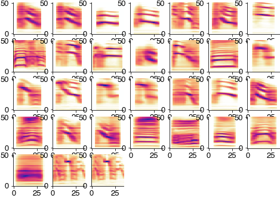

Song of Bengalese finches¶
import numpy as np
import sklearn
import matplotlib.pyplot as plt
import librosa.feature
from matplotlib.colors import ListedColormap, LinearSegmentedColormap
import colorcet as cc
import matplotlib
import deepss_unsupervised.spec_utils
import umap
import hdbscan
from io import BytesIO
import urllib.request
plt.style.use('ncb.mplstyle')
# import zarr
# store_raw = zarr.open('/Volumes/shinkansen/Dropbox/dss.paper/sober/20200412_135228.zarr')
# fs = 32_000
# t0 = 0
# t1 = t0 + 50_000_000
# x = store_raw['x_test'][t0:t1,0]
# y = store_raw['labels_test'][t0:t1]
# diff = np.diff((y>0).astype(np.double))
# syllable_onsets = np.where(diff==1)[0]
# syllable_offsets = np.where(diff==-1)[0]
# syllable_types = y[syllable_onsets+10]
# np.savez_compressed('data/birds.npz', recording=x, syllable_onsets=syllable_onsets, syllable_offsets=syllable_offsets,
# syllable_types=syllable_types, samplerate=fs)
# data from: D Nicholson, JE Queen, S Sober (2017). Bengalese finch song repository. https://doi.org/10.6084/m9.figshare.4805749.v5
url = 'https://github.com/janclemenslab/deepss_unsupervised/releases/download/v0.4/birds.npz'
with urllib.request.urlopen(url) as f:
ff = BytesIO(f.read())
d = np.load(ff)
recording = d['recording']
syllable_onsets = d['syllable_onsets']
syllable_offsets = d['syllable_offsets']
syllable_types = d['syllable_types']
samplerate = d['samplerate']
import noisereduce as nr
noise_clip = recording[:150_000]
x_nr = nr.reduce_noise(audio_clip=recording, noise_clip=noise_clip, verbose=False)
hop_length = int(2 * samplerate / 1000)
win_length = int(10 * samplerate / 1000 * 2)
specgram = librosa.feature.melspectrogram(x_nr, sr=samplerate, n_fft=win_length, hop_length=hop_length, power=2)
specgram = specgram[np.where(specgram[:,0]!=0)[0],:]
sm = np.median(specgram, axis=1)
print(sm.shape)
plt.figure(figsize=(20, 2))
plt.imshow(np.log2(specgram))
plt.show()
(128,)

specs = []
plt.figure(figsize=(10, 10))
for cnt, (onset, offset) in enumerate(zip(syllable_onsets, syllable_offsets)):
spec = np.log2(specgram[:, int(onset/hop_length):int(offset/hop_length)] / sm[:, np.newaxis])
spec = spec[4:-20:2, :]
spec = spec - 2
spec[spec<0] = 0
specs.append(spec)
try:
plt.subplot(4,4,cnt+1)
plt.imshow(specs[-1], cmap='jet')
plt.xlim(0, 50)
plt.colorbar()
except:
pass
plt.show
<function matplotlib.pyplot.show(close=None, block=None)>

spec_rs = [deepss_unsupervised.spec_utils.log_resize_spec(spec, scaling_factor=8) for spec in specs]
max_len = np.max([spec.shape[1] for spec in spec_rs])
spec_rs = [deepss_unsupervised.spec_utils.pad_spec(spec, pad_length=max_len) for spec in spec_rs]
spec_flat = [spec.ravel() for spec in spec_rs]
spec_flat = np.array(spec_flat)
out = umap.UMAP(min_dist=0.5).fit_transform(spec_flat)
hdbscan_labels = hdbscan.HDBSCAN(min_samples=10, min_cluster_size=20).fit_predict(out)
plt.figure(figsize=(8, 8))
plt.scatter(out[:,0], out[:,1], c=syllable_types, cmap='cet_glasbey_dark', alpha=0.2, s=8)
plt.xlabel('UMAP 1')
plt.ylabel('UMAP 2')
plt.title('Pre-defined syllable labels')
plt.show()

plt.figure(figsize=(8, 8))
cmap = cc.palette['glasbey_dark']
cmap = list(cmap)
cmap.insert(0, (0.7, 0.7, 0.7))
cmap = ListedColormap(cmap)
plt.scatter(out[:,0], out[:,1], c=hdbscan_labels, cmap=cmap, alpha=0.2, s=8, edgecolor='none')
plt.xlabel('UMAP 1')
plt.ylabel('UMAP 2')
plt.title('Unsupervised syllable labels')
plt.show()

C = sklearn.metrics.confusion_matrix(syllable_types, hdbscan_labels)
plt.figure(figsize=(8, 6))
plt.imshow(np.log2(C))
plt.colorbar()
plt.title('Confusion matrix (log scaled')
plt.ylabel('Syllable label')
plt.xlabel('Cluster label')
print(f'Homogeneity_score: {sklearn.metrics.homogeneity_score(syllable_types, hdbscan_labels):1.2f}\n',
f'Completeness_score: {sklearn.metrics.completeness_score(syllable_types, hdbscan_labels):1.2f}\n',
f'V_measure_score: {sklearn.metrics.v_measure_score(syllable_types, hdbscan_labels):1.2f}')
Homogeneity_score: 0.90
Completeness_score: 0.94
V_measure_score: 0.92

plt.figure(figsize=(8, 8))
for label in np.unique(hdbscan_labels):
if label>=0:
idx = np.where(hdbscan_labels==label)[0]
plt.subplot(7, 7, label+1)
plt.imshow(np.mean(np.array(spec_rs)[idx], axis=0), cmap='cet_CET_L17')
